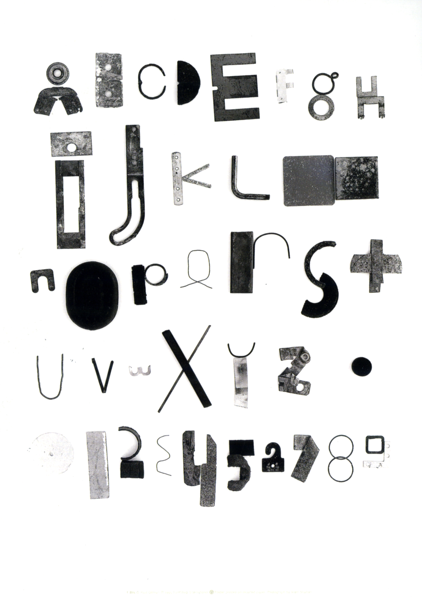

Tout d’abord, quand on parle de polices de caractères « display », il faut se demander ce que cela signifie exactement. La notion de « display », vient de l’anglais qui littéralement veut dire « Affichage ». Historiquement, les polices que nous appelons aujourd’hui display sont issues des polices grasses et voyantes, celles que l’on aperçoit sur des enseignes de garage [a], des affiches de manifestations, etc…
« A display typeface is a typeface that is intended for use at large sizes for headings, rather than for extended passages of bodytext. » — Wikipédia
C’est un type de dessin de caractère relativement inclassable, et d’ailleurs souvent malmené par les classifieurs typographiques de l’Histoire. En effet, ces derniers ont souvent eu du mal à les définir et les catégoriser, du fait que ces polices ont besoin d’un contexte fort et précis pour exister en toute cohérence. Par exemple, nous pouvons le voir avec les différentes classifications faites dans l’histoire par différents typographes comme Joël Bertin ou Jean Alessandrini. C’est toujours un mic-mac de formes de lettres un petit peu « hors normes » misent ensemble comme un groupe discriminé parce qu’on ne sait pas comment les qualifier, par rapport aux règles et formes déjà établies.
Pour beaucoup, les termes « display » et « ornementale » sont synonymes en matière de typographie, bien que « display » soit à l’origine un terme surtout utilisé pour désigner des polices qui sont à lire en grand corps et n’ayant pas forcément à être des formes non-conventionnelles, par rapport au style suisse, par exemple. Alors que le terme « ornementale » peut plus facilement désigner des formes de lettres excentriques, avec une forte personnalité.
En effet, ce terme comprend énormément de variation dans la typographie et le panel est si large que nous ne pourrons pas tout aborder dans ce document. Ici l’idée est de voir comment, et pourquoi, la création contemporaine se sert de ces dessins excentriques.
Passant par les caractères issus de l’art nouveau, les caractères de labeur à variation optique, les caractères impactant, la calligraphie, en soit tout caractère ayant une expression et une personnalité forte. On peut retrouver les premières traces d’archivage et présentations de caractères display et de gestion expérimentale de la typographie dans les parutions du magazine Fuse, fondé par Neville Brody et Jon Wozencroft en 1991. Cette collecte nous montre que, déjà dans les années 1990, l’engouement pour la création typographique expérimentale était présent et engagé.
La typographie est aujourd’hui plus qu’ambivalente et doit aussi bien être pensée pour le numérique, offrant plus de possibilités et ouvrant donc plus à la création de polices ornementales, que pour l’impression. Elle peut aujourd’hui (et en réalité depuis quelques années) être autant déformée, triturée, détruite, repensée, que les éléments iconographiques, conduisant a une vague d’ambition générale de questionner les règles typographiques en vigueur. Cela vaut pour les compositions statiques, mais on peut aussi parler de la typographie dite cinétique [3], ou typographie en mouvement, qui est un vaste terrain d’expérimentation formelle. Les polices de caractères variables aussi nous forcent à reconsidérer l’intérêt et la pertinence des règles typographiques établies.
→ PARTIE 2